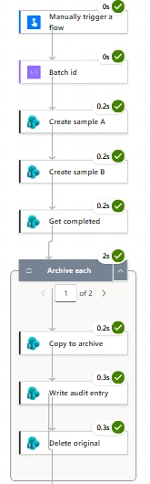

- Power Automate
- Level 8 · Real-world patterns · 5 of 8
Archival and audit logs
Working lists slow down and get cluttered as finished items pile up. Archiving moves them out; an audit log records what each flow changed.
Archive two completed requests
WhatCopy finished items to an archive list, log each change, then delete the original.
WhyFaster lists, a full history, and a way to trace any run's changes.
DemoTwo completed requests archived under one batch ID.
Per item, in this order
Batch ID:
guid() once per run1. Copy to archive
2. Write audit entry
Did both succeed?
Yes
3. Delete original
No
Keep the original; next run retries


Never delete first. If the copy fails after a delete, the item is gone.
What an audit entry holds
One audit entry
| Column | Example |
|---|---|
| RequestId | 42 |
| Action | Archived |
| OldValue / NewValue | Completed / Archived |
| BatchId | bc06d118-… |
| Created / Created By | filled in by SharePoint |
The batch ID ties every entry from one run together.
New to this? Start from the basics optional
Audit log: an append-only list of changes; entries are added, never edited.
Build it step by step optional
- Create an archive list (key columns + OriginalId, ArchivedOn) and an audit list (RequestId, Action, OldValue, NewValue, BatchId).
- Schedule a flow: Get items with
Status eq 'Completed'and Modified older than 90 days. - Loop with concurrency 1: copy, log, then delete.
- Let people read the audit list but not edit it.
Common mistakes
- Deleting before copying.
- No batch ID.
- Editable audit entries.